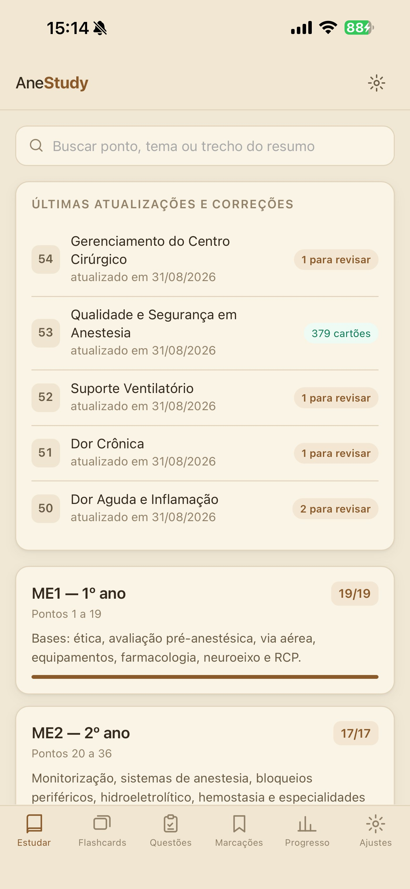
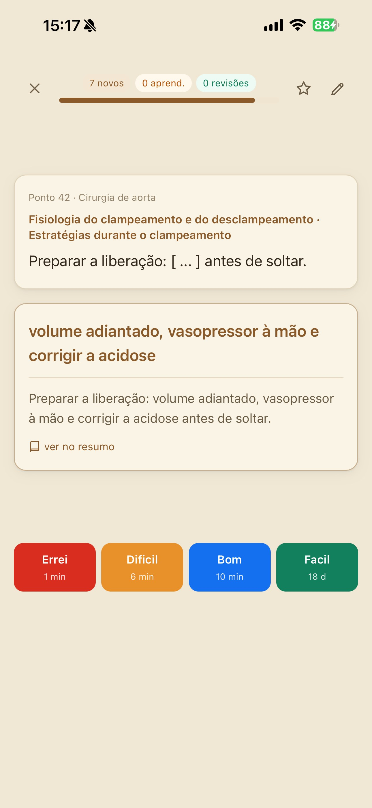
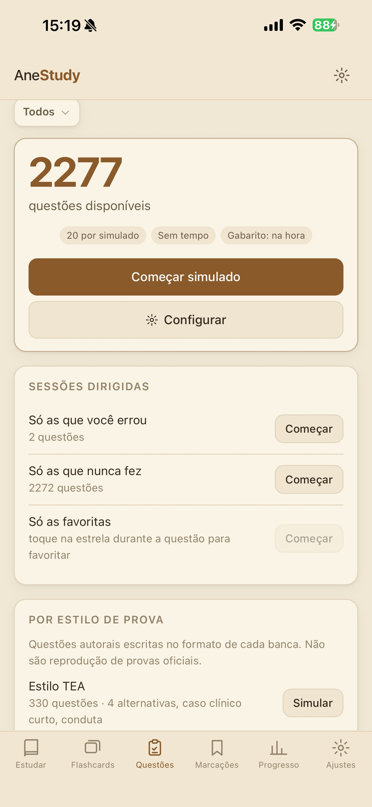
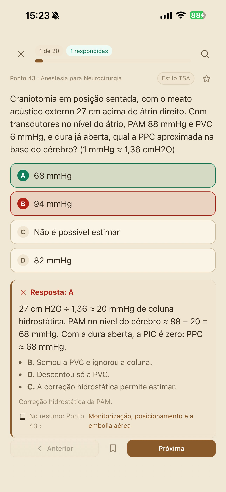
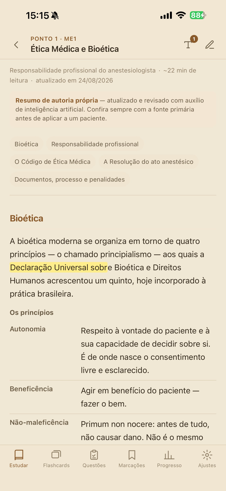
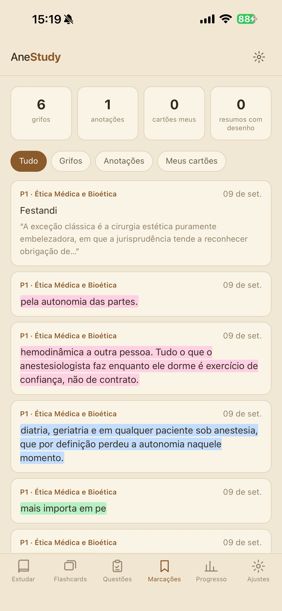
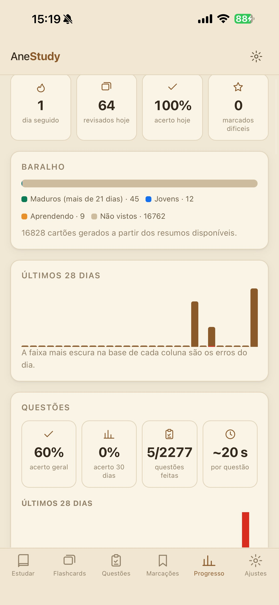
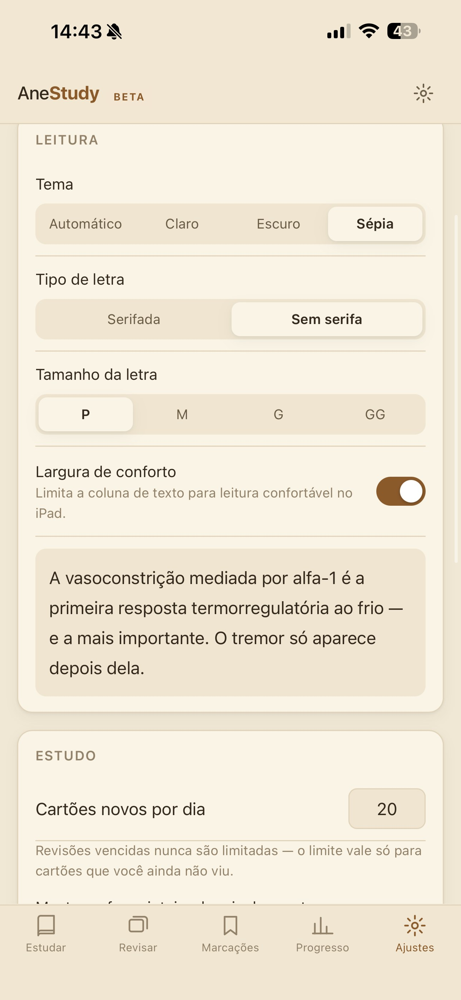

AneStudy
Resumos, flashcards e questões de Anestesiologia, ponto a ponto pela SBA.
Resumos de autoria própria, revisados com apoio de inteligência artificial e organizados pelo currículo da Sociedade Brasileira de Anestesiologia — com cartões de repetição espaçada e um banco de questões no estilo de cada banca para você treinar de verdade.

Tudo que você precisa pra revisar de verdade, em um só lugar
Do resumo ao cartão de revisão, e do cartão à questão de prova — organizado ponto a ponto para caber entre um plantão e outro.
Resumos ponto a ponto
Organizados por ano de residência (ME1, ME2, ME3) e por ponto da SBA — do 1 ao 54 e crescendo.
Flashcards
Cartões gerados automaticamente a partir de cada resumo, com fila de novos, aprendendo e revisões — como um Anki dedicado à anestesia.
Banco de questões
Mais de 2.200 questões autorais, no estilo de cada banca (TEA, TSA e outras), com simulados configuráveis, explicação detalhada e link direto pro resumo de cada tema.
Sessões dirigidas
Refaça só o que você errou, nunca viu ou marcou como difícil — em flashcards e em questões.
Grifos e anotações
Marque trechos e escreva notas direto no resumo, tudo salvo no aparelho.
Cartões próprios
Crie e edite seus próprios cartões sem perder o histórico de revisão dos automáticos.
Progresso detalhado
Sequência de dias, maturidade do baralho, acerto nas questões por ano de residência e desempenho por ponto da SBA.
Leitura sob medida
Tema claro, escuro ou sépia, tipografia serifada ou não, quatro tamanhos de letra e largura de conforto no iPad.
Backup manual
Exporte e importe seu progresso quando quiser. Nada sai do aparelho sozinho.
O aplicativo em ação
Resumos, flashcards, questões e progresso — desenvolvido para quem estuda Anestesiologia todo dia.







Escrito por quem também estuda para a prova.
O AneStudy nasceu da rotina de residência: resumir cada ponto da SBA de um jeito que desse pra revisar de verdade, não só ler uma vez e esquecer.
Os resumos são de autoria própria e passam por revisão contínua, com apoio de inteligência artificial para organizar e atualizar o conteúdo — mas a fonte primária continua sendo a literatura e as diretrizes oficiais.
Feito para caber entre um plantão e outro: leia o resumo, deixe o app gerar os cartões, revise um pouco todo dia e treine com questões no estilo da sua banca.
Aviso importante
O conteúdo do AneStudy é publicado ponto a ponto e passa por revisão contínua — novos pontos e questões são adicionados com frequência.
Os resumos são material de estudo, de autoria própria e com apoio de inteligência artificial — confira sempre a fonte primária antes de aplicar qualquer conduta a um paciente.
Leve o AneStudy para a sua reta final de estudo
Baixe agora na App Store. A versão para Android está em desenvolvimento — o link abaixo é ativado assim que sair.